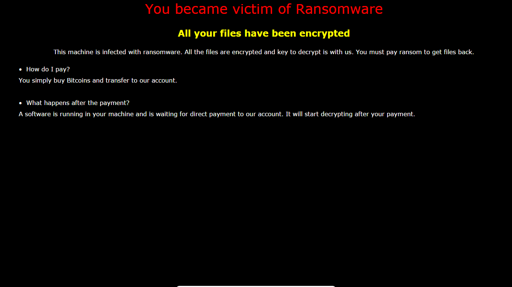

POC Ransomware (Red Team Simulation, 2019)
POC Ransomware - A proof-of-concept ransomware simulation developed for red team engagement and educational purposes.
Warning: This project is for demonstration only. Do not use for malicious purposes.
Overview
This project demonstrates a basic ransomware proof-of-concept (POC) developed as part of a red team engagement in 2019. The goal was to simulate ransomware behavior for awareness and defense training, not to cause real harm. The POC changes the desktop wallpaper to a ransom image and optionally displays a dialog box, mimicking the psychological impact of real ransomware without encrypting files.
Main Features
Code Structure
Key Code Snippets
Minimal Wallpaper Change (poc.c)
#include <stdio.h>
#include <windows.h>
void main()
{
printf("hello world! \n");
SystemParametersInfo(SPI_SETDESKWALLPAPER, 0, "C:\\poc\\poc.png", SPIF_SENDCHANGE);
}
Full POC Logic (main.cpp)
// ... existing code ...
HANDLE fp;
fp = CreateFile("poc.jpg", GENERIC_WRITE, 0, NULL, CREATE_ALWAYS, FILE_ATTRIBUTE_NORMAL, NULL);
WriteFile(fp, IMAGE, 68608, NULL, NULL);
CloseHandle(fp);
SystemParametersInfo(SPI_SETDESKWALLPAPER, 0, (void*)newdir.c_str(), SPIF_SENDCHANGE);
// ... existing code ...

Figure: Example ransom image set as desktop wallpaper by the POC.
Red Team Context & Ethics
Ethical Use Only: This POC was developed for red team simulation, awareness, and defense training. It does not encrypt files or cause real harm. Always use such tools responsibly and with proper authorization.
Development Timeline and Context
Limitations and Next Steps